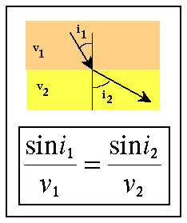

Snell's Law
If we include raypaths for the reflected, refracted, and direct arrivals described on the previous page, we would find that a selected set of the raypaths would look like those shown below.
These raypaths are simply drawn to be perpendicular to the direction of propagation of the wavefield at all times. As they interact with the boundary, these raypaths obey Snell's Law. Snell's Law can be derived any number of different ways, but the way it is usually described is that the raypath that follows Snell's Law is the path by which the wave would take the least amount of time to propagate between two fixed points.

Consider the refracted raypaths shown above. In our particular case, v2, the velocity of the halfspace, is less than v1, the velocity of the layer. Snell's Law states that in this case, i2, the angle between a perpendicular to the boundary and the direction of the refracted raypath, should be smaller than i1, the angle between a perpendicular to the boundary and the direction of the direct raypath. This is exactly the situation predicted by the wavefront's shown in the figure above.
If v2 had been larger than v1, a situation we will consider in some detail later, then Snell's Law predicts that i2 would be greater than i1. In this case, the wavefront of the refracted wavefield would have smaller curvature than the wavefront of the direct field (in the present case, the wavefront of the refracted field has greater curvature than the wavefront of the direct field).
Snell's law can also be applied to the reflected raypath by setting v2 equal to v1. If i2 is equal to v1, then the angle of reflection, i2, should be equal to the angle of the incident wave, i1, as we would expect from our physics classes. Again, this is exactly the situation predicted by the wavefronts of the reflected wavefield shown above.
As one final note for the case under consideration, for a high velocity layer overlying a low velocity halfspace, the waves described previously and shown above (i.e., direct, reflected, and refracted) are the only body waves observed. Notice also that if we were to place receivers at the Earth's surface, we would never observe the refracted arrival. It continues to propagate downward, never returning to the surface.
Seismology
- Simple Earth Model: Low-Velocity Layer Over a Halfspacepg 11
- Head Wavespg 12
- Records of Ground Motionpg 13
- Travel-time Curves for a Simple Earth Modelpg 14
- First Arrivalspg 15
- Determining Earth Structure from Travel Timespg 16
- Derivation of Travel Time Equationspg 17
- High-Velocity Layer Over a Halfspace: Reprisepg 18
- Picking Times of Arrivalspg 25
- Wave Propagation with Multiple Horizontal Layerspg 26
- Travel Time Curves from Multiple Horizontalpg 27
- Hidden Layerspg 28
- Head Waves from a Dipping Layer: Shooting Down Dippg 29
- Head Waves from a Dipping Layer: Shooting Up Dippg 30
- A Field Procedure for Recognizing Dipping Bedspg 31
- Estimating Dips and Depths from Travelpg 32